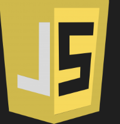
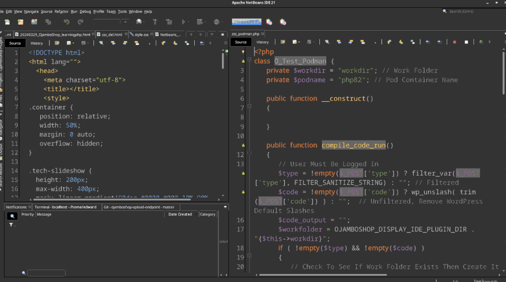
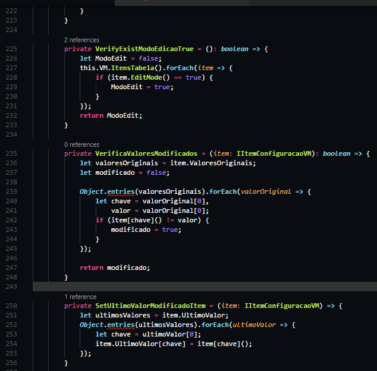

Lowercase Vahendid
Mis on lowercase vahendid?
Lower CASE vahendid (madala taseme CASE-vahendid) on tarkvaraarenduse tööriistad, mis keskenduvad arenduse hilisematele etappidele, näiteks koodi kirjutamisele, kompileerimisele, testimisele ja silumisele.
Mille jaoks neid kasutatakse?
Lower CASE vahendid on kasulikud arendustsükli tehnilisteks ülesanneteks.
Milliseid vahendeid olen isa kasutanud?
Eclipse ja Visual studio
2 näidet uppercase vahendist mida veel kasutanud ei ole.
Tööriista nimi - logo
Netbeans:
 Javascript: Javascript: | 
Tööriista programmi akna pilt
Netbeans:  Javascript: 
Mida tööriistaga teha saab
NetBeans on avatud lähtekoodiga integreeritud arenduskeskkond (IDE), mis toetab mitmeid programmeerimiskeeli, sealhulgas Java, PHP, JavaScript, HTML, CSS ja palju muud.
JavaScript on keel, mida kasutatakse veebiarenduses, serveripoolsete rakenduste loomisel, mobiilirakendustes jne.
Viited
Case vahendite klassifikatsioon,
Upper and Lower Case vahendid,
Netbeans,
Javascript
|